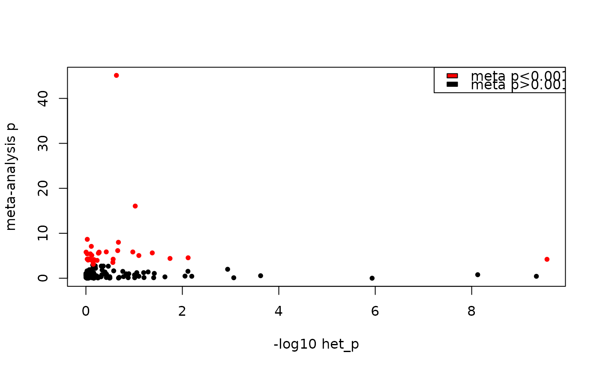

Perform meta-regression for repeated measurements. Return merged timewise and training differential analysis summary statistics, where results for features with multiple measurements are replaced with the meta-regression results when appropriate. This method was used to generate the MotrpacRatTraining6moData::METAB_DA_METAREG differential analysis results, which are the version of results used in the manuscript analyses.
Usage
metab_meta_regression(
tissue,
timewise_input = NULL,
training_input = NULL,
het_p_threshold = 0.001
)Arguments
- tissue
character, tissue abbreviation, one of MotrpacRatTraining6moData::TISSUE_ABBREV
- timewise_input
r data frame, custom input. To see the expected format, look at a table returned by
load_metab_da()withtype="timewise".- training_input
r data frame, custom input. To see the expected format, look at a table returned by
load_metab_da()withtype="training".- het_p_threshold
numeric, meta-regression cases with a heterogeneity p-value below this are considered to have high heterogeneity. Default: 0.001
Value
named list where meta_reg_timewise_dea is a data frame with
the adjusted timewise results, training_meta_regression is a data frame with the adjusted training
results, meta_regression_results is a named list with meta-regression
results per redundant metabolite, meta_regression_models is a table of the number of each
type of model used for meta-regression, and metabolite_categories is a named list
of the RefMet IDs of metabolites corresponding to each category described in the details.
Details
We try multiple models per repeated analyte:
Model 1:Two random effects factors if
platformandis_targetedare not redundant. Default optimization.Model 2:Two random effects factors if
platformandis_targetedare not redundant with alternative optimization.Model 3:
platformandis_targetedare redundant. Use a single RE factor with default optimization. Also, use this ifQMpis NA, which is an indication of over-parameterization of the model.Model 4:
platformandis_targetedare redundant. Use a single RE factor with alternative optimization.Model 5:If all previous analyses failed, use a simple fixed-effects approach.
After performing meta-regression, we define four categories of metabolites:
measured once
measured multiple times, high heterogeneity, has a targeted platform
measured multiple times, high heterogeneity, no targeted platform
measured multiple times, low heterogeneity
For categories 1 and 3 we keep the results as is. For category 2 we take the targeted data only. Finally, for category 4 we take the meta-regression results.
Examples
# Perform meta-regression for gastrocnemius
res = metab_meta_regression("SKM-GN")
#> Warning: SKM-GN differential analysis results have ref standard results. Excluding them from meta-analysis.
#> Performing meta-regression for 117 redundant metabolites in SKM-GN...
#> Done.

#> Number of models that were fit for SKM-GN:
#> metareg_nplatform
#> metareg_calls 2 3 4 5
#> list(~analysis_group | platform, ~analysis_group | istargeted) 0 23 8 5
#> x_subset 2 4 1 0
#> FE 74 0 0 0
#> Total number of cases with high heterogeneity: 6
#> Total number of cases with low heterogeneity: 111
#>
#> Summary of the number of SKM-GN metabolites in each category:
#> SKM-GN
#> unique_metabs 933
#> high_het_metabs_targeted 5
#> high_het_metabs_untargeted_only 1
#> meta_anal_metabs 111
names(res)
#> [1] "timewise_meta_regression" "training_meta_regression"
#> [3] "meta_regression_results" "meta_regression_models"
#> [5] "metabolite_categories"